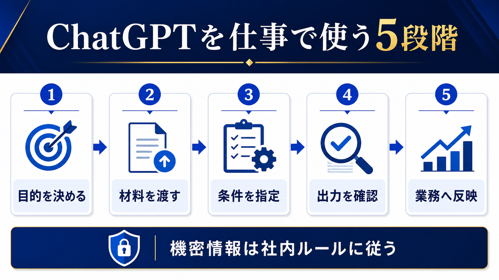

WORKFLOW / CHATGPT FOR BUSINESS
ChatGPTを仕事で使う方法｜中小企業の最初の5業務と安全な進め方
ChatGPTは質問に答えるだけでなく、文章の下書き、情報整理、比較、会議準備などの補助に使えます。ただし、良い結果を得るには目的・材料・条件を揃え、出力を確認して業務へ戻す手順が必要です。

- ChatGPTはゼロから任せるより、材料を整理して下書きを作る用途で始める
- 出力の事実、数字、宛先、社内ルールを人が確認する
- プロンプトを個人技にせず、良い例・確認項目・保存場所を共有する
最初は「結果を確認しやすい」5業務から試す
ChatGPTの活用テーマは、業務の頻度が高く、入力と出力の形がある程度決まり、担当者が結果を確認できるものを選びます。OpenAIの小規模チーム向けガイドでも、文章作成、分析、ツール連携など、既存業務に沿った使い方が紹介されています。
| 業務 | ChatGPTに頼むこと | 人が確認すること |
|---|---|---|
| メール | 要点から返信の下書き | 事実、温度感、宛先、約束 |
| 会議準備 | 論点、質問、決定事項の整理 | 前提、参加者、優先順位 |
| 提案書 | 顧客情報から構成案と初稿 | 実績、価格、固有名詞、表現 |
| 社内文書 | 長文の要約と箇条書き | 抜け落ちた条件と最新版 |
| アイデア整理 | 選択肢、比較軸、質問案 | 実行可能性と自社事情 |
指示は「目的・材料・条件・出力形式」で作る
「いい感じにまとめて」だけでは、出力の良し悪しを判断できません。何に使う文章か、どの材料を根拠にするか、含める条件と除外する条件、出力の形式を指定します。機密情報を入力しないため、固有名詞や数値を匿名化したサンプルで型を作る方法もあります。
目的
誰が何に使う成果物か。
材料
根拠にする情報と前提。
条件
長さ、口調、表、禁止事項。
出力形式に「不明な点は不明と書く」「根拠がない数字を足さない」「確認が必要な箇所に印を付ける」を含めると、確認作業がしやすくなります。プロンプトは完成品ではなく、使った入力と修正内容と一緒に改善します。
出力は事実・条件・使い道の3点で確認する
ChatGPTの文章が自然でも、内容が正しいとは限りません。確認者は誤字だけでなく、元資料にない事実が追加されていないか、期限・金額・社内ルールが合っているか、読む相手に誤解を与えないかを見ます。
- 事実：原資料や公式ページと照合する。
- 条件：金額、期限、対象者、権限、禁止事項を見る。
- 用途：社外送付か社内下書きかを区別する。
- 承認：必要な担当者が確認した記録を残す。
個人の使い方を、チームの手順へ変える
一人だけが上手に使えても、異動や退職でノウハウが消えると業務改善は続きません。よく使う用途ごとに、入力例、指示の型、出力の確認項目、保存場所、更新者をまとめます。良い出力だけでなく、失敗例と修正方法を残すと、使い始める人が判断しやすくなります。
| 共有するもの | 内容 | 更新のきっかけ |
|---|---|---|
| プロンプト例 | 目的・材料・条件・出力形式 | 使いにくい出力が出たとき |
| 確認表 | 事実・数字・宛先・権限 | ミスや差し戻しが起きたとき |
| 利用ルール | 入力可・要確認・禁止 | サービスや社内方針の変更 |
| 効果記録 | 時間、修正、確認漏れ | 月次の振り返り |
生成AIの社内利用ルールや30日ロードマップとつなぎ、個人の試行をチームの運用へ広げます。
入力情報は社内ルールとサービス条件を先に確認する
顧客名、個人情報、未公開の価格、契約条件、認証情報などを入力する前に、会社の情報分類と利用サービスのデータ取扱いを確認します。入力を匿名化し、必要最小限にできない場合は、社内環境や別の処理方法を検討します。迷ったときの相談先を決めておくことも、利用を止めないための安全策です。
依頼文は「役割・目的・材料・条件・確認」で残す
チームで再利用する依頼文には、AIに演じさせる役割を増やしすぎず、成果物の用途を明記します。たとえば「営業担当の下書き補助として、以下の商談メモから社内確認用の提案構成を作る。根拠のない数字は追加せず、不明点を箇条書きにする。出力は見出し、要点、確認事項の順にする」といった形です。
| 項目 | 書くこと | 確認すること |
|---|---|---|
| 役割 | 下書き補助、整理役など | 最終判断者をAIにしない |
| 目的 | 社内共有、顧客向け準備など | 用途に合った表現か |
| 材料 | 根拠にするメモや資料 | 最新版か、入力可否は問題ないか |
| 条件 | 長さ、形式、禁止事項 | 不明点を推測させないか |
この型を保存しても、業務やサービスが変われば見直します。使った入力、修正、採用理由を短く残すと、個人の経験をチームの手順へ変えられます。
- OpenAI「小規模チーム向けChatGPT活用ガイド」（2026-07-13確認）
- 中小企業大学校「はじめて学ぶ生成AI活用の基本」（2026-07-13確認）
- 個人情報保護委員会「生成AIサービスの利用に関する注意喚起」（2026-07-13確認）
よくある質問
ChatGPTは無料版でも仕事に使えますか？
機能やデータの取扱い、利用制限はサービスとプランで異なります。業務情報を入力する前に、会社のルールとサービスの最新条件を確認してください。
プロンプトは長いほど良いですか？
長さより、目的、材料、条件、出力形式が明確であることが重要です。不要な情報を減らし、確認しやすい形式を指定します。
ChatGPTの回答を顧客へそのまま送れますか？
そのまま送らず、事実、金額、期限、表現、個人情報を担当者が確認します。外部送付の承認が必要な会社では、通常の手順に戻します。